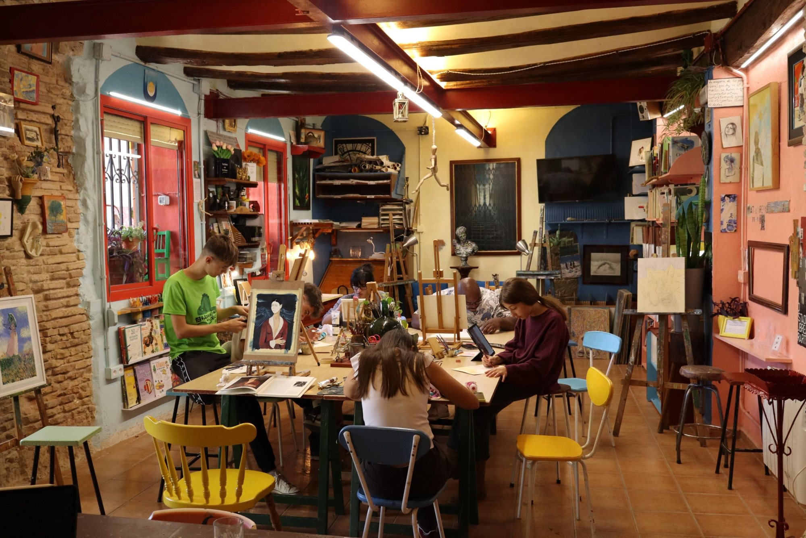
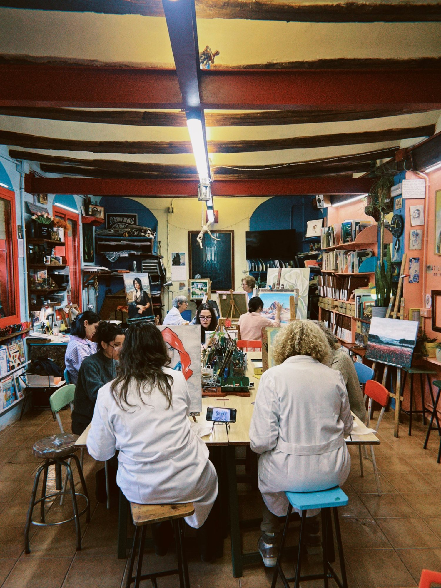

La escuela
Escuela de Dibujo y Pintura Sanagustín
Es un espacio creativo en el casco antiguo de Huesca. Nació en 1994, fundada por los padres de Javier, entre ellos el pintor de la ciudad Fernando Sanagustín. Hoy la dirige su hijo Javier Sanagustín, que ha mantenido el espíritu original de la escuela: un lugar creativo y acogedor para los apasionados del arte.
Cualquier persona, sin importar su edad o nivel de experiencia, puede acudir a pintar y descubrir su creatividad en un ambiente relajado. En las clases nos adaptamos a las necesidades de cada persona, desde quienes acaban de iniciarse en el dibujo y la pintura hasta los más experimentados.
Se trabaja en grupos reducidos según edades y niveles, con técnicas que van del óleo a la acuarela, pasando por la pintura acrílica, el grafito y las ceras, con materiales profesionales para probarlas todas. Hay espacio amplio y un espacio al aire libre para los días de sol.
Javier ha crecido rodeado de paletas, lienzos y pinceles. De niño miraba pintar a su padre y esperaba cumplir seis años para ser un alumno más. Hoy su afición es su profesión, y en sus clases se transmite su entusiasmo por el arte.
Dónde
Calle San Salvador 15, entlo. izda.
22002 Huesca

Foto: Javier Sanagustín Moreu

Foto: Javier Sanagustín Moreu